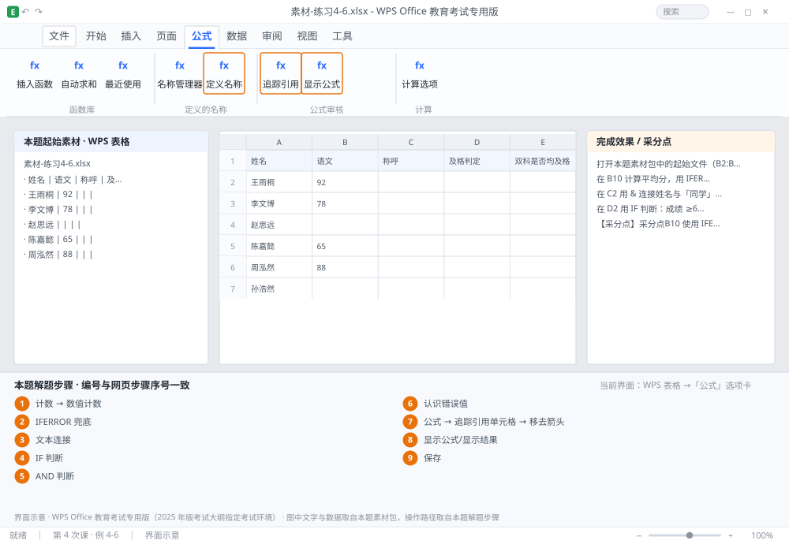

完成比对文档 · 例 4-6
公式基础：IFERROR 兜底、文本连接、比较运算与错误值排查 ｜ 第 4 次课 / WPS 表格 ｜ 网页：实操-表格1.html ｜ 考试环境：WPS Office 教育考试专用版（2025 年版考试大纲指定考试环境）
用途 本页按修订后的题目要求与解题步骤生成，是交卷自查的结果基准：
逐项列出每一步应出现的可复核结果，配合模拟操作截图与解题结果文件使用。
它不是素材包的一部分，不会预置答案动作；起始素材仍从本题素材包下载。
一、本题起始素材包
目录：练习素材/练习4-6-公式与错误排查/ ｜
下载包：练习素材/下载/练习4-6-公式与错误排查.zip
二、题目要求
- 打开本题素材包中的起始文件（B2:B9 有 2 个空白单元格，直接求平均会出错）。
- 在 B10 计算平均分，用 IFERROR 包裹，出错时返回 0。
- 在 C2 用 & 连接姓名与「同学」，下拉到 C9。
- 在 D2 用 IF 判断：成绩 ≥60 显示「及格」，否则「不及格」，下拉到 D9。
- 在 E2 用 AND 判断「语文、数学均 ≥60」是否成立，下拉到 E9。
- 在 G1:G6 列出 6 种常见错误值及含义（文字说明）。
- 在 H2 用「公式审核」查看 B10 的引用单元格。
- 保存为 学号-姓名-练习4-6.xlsx。
三、解题步骤（编号与下方核对表、截图编号一致）
- 打开本题素材包中的起始文件，选中 B2:B9 看状态栏计数——若「计数」小于「数值计数」，说明有空单元格。
- IFERROR 兜底。B10 输入 =IFERROR(AVERAGE(B2:B9),0) → Enter。IFERROR 的作用：公式正常就返回结果，报错就返回你指定的值（这里是 0）。
- 文本连接。C2 输入 =A2&"同学" → 下拉到 C9。若姓名在 A 列、学号在 B 列，也可 =A2&"（"&B2&"）" 组合多段文本。
- IF 判断。D2 输入 =IF(B2>=60,"及格","不及格") → 下拉到 D9。注意三个参数用英文逗号分隔，文本参数必须加英文双引号。
- AND 判断。E2 输入 =IF(AND(B2>=60,C2>=60),"是","否")（若素材只有一列成绩，可改为 =AND(B2>=60,TRUE) 演示语法）→ 下拉。
- 认识错误值。在 G 列逐条写入：#DIV/0! 除数为零或空#VALUE! 参数类型不对（文本参与四则运算）#REF! 引用的单元格被删除#NAME? 函数名拼错或未定义名称#N/A 查找函数找不到匹配值#NUM! 数值参数超出范围（如负数开平方）
- 公式审核。选中 B10 →「公式」→「追踪引用单元格」→ 出现蓝色箭头指向 B2:B9 → 说明公式确实引用了这些格。「移去箭头」可清除。
- 显示公式。按 Ctrl+`（反引号）可切换「显示公式/显示结果」，用于批量检查整表公式。
- 保存。Ctrl+S。
四、完成效果 / 采分点
采分点B10 使用 IFERROR 包裹且不报错 · C 列为 & 连接结果（如「王雨桐同学」） · D 列 IF 判断正确 · E 列 AND 语法正确 · 6 种错误值含义写全 · 已演示追踪引用单元格
五、逐项完成核对表
| 步骤 | 关键操作路径 | 应出现的结果（可复核） |
|---|
| 1 | 打开本题素材包中的起始文件，选中 B2:B9 看状态栏计数——若「计数」小于「数值计数」，说明有空单元格 | B2:B9、「计数」、「数值计数」 |
| 2 | IFERROR 兜底 | B10、=IFERROR(、B2:B9 |
| 3 | 文本连接 | C2、A2、C9、B2 |
| 4 | IF 判断 | D2、=IF(、B2、D9 |
| 5 | AND 判断 | E2、=IF(、B2、C2、=AND( |
| 6 | 认识错误值 | 认识错误值 |
| 7 | 公式审核 | B10、「公式」、「追踪引用单元格」、B2:B9、「移去箭头」 |
| 8 | 显示公式 | 「显示公式/显示结果」 |
| 9 | 保存 | 保存 |
六、模拟操作截图

界面示意 · WPS Office 教育考试专用版 · 橙色编号与本题解题步骤序号一致；
图中文字与数据取自本题素材包，功能入口取自本题解题步骤。
核对方法：按网页解题步骤完成并另存自己的成稿后，逐行比对本表第 3 列的
参数、公式、区域、文件名与对象数量；再对照网页「完成效果 / 采分点」检查版式是否一致。